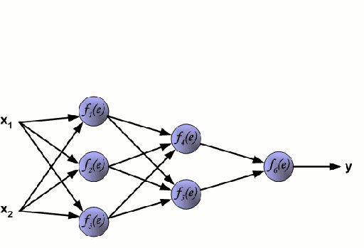
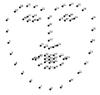
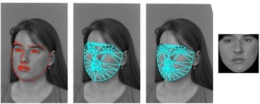

Реферат по теме выпускной работы
Содержание
- Введение
- 1. Актуальность темы
- 2. Обнаружение лиц в видеопотоке
- 3. Нахождение антропометрических точек лица
- 4. Нормализация обнаруженных лиц
- 5. Классификация обнаруженных лиц
- Вывод
- Список источников
Введение
Задача выделения лица человека в естественной или искусственной обстановке и последующей идентификации всегда находилась в ряду самых приоритетных задач для исследователей, работающих в области систем машинного зрения и искусственного интеллекта. Распознавание лиц — одно из наиболее перспективных направлений машинного обучения. Системы распознавания могут применяться для биометрической бесконтактной идентификации по лицу, что значительно упростит процедуру подтверждения личности без предъявления документов и оптимизирует работу соответствующих служб. Системы, о которых идет речь, могут за доли секунды идентифицировать человека в толпе. Использование глубокого машинного обучения для распознавания лиц демонстрирует отличные результаты. Уже несколько лет данная технология активно применяется для идентификации не только лиц, но и практически всех предметов на изображении. Она применяется для биометрической бесконтактной идентификации по лицу, что значительно упростит процедуру подтверждения личности без предъявления документов и оптимизирует работу соответствующих служб.
В данной статье рассмотрена одна из самых производительных технологий систем распо- знавания лиц, основанная на глубоком машинном обучении. Работа созданного программного средства состоит из трех основных этапов: обнаружение лица в потоке видеоданных, его нормали- зация и классификация. Для программирования модели использован язык Python[1].
1. Актуальность темы
Обработка изображений всегда была активной областью исследований. В области обработки изображений существует множество усовершенствований, инноваций, разработок и модификаций. В настоящее время научно-практическая деятельность в области компьютерного зрения постоянно расширяется, наполняясь новыми идеями и разработками. По оценкам специалистов среднестатистический человек может идентифицировать знакомое лицо в толпе с точностью 97,53%. Но это меньше по сравнению с современными алгоритмами, которые добились точности 99,8%. А в последние несколько лет они достигли практически совершенства [2].
Существует много способов распознавания лица: метод гибкого сравнения на графах, нейронные сети, скрытые марковские модели, статистические методы и другие. Все они по-разному решают проблемы, влияющие на качество систем распознавания – это изменение освещённости, положения головы, размера лица и др. В последние годы эффективные системы распознавания были построены на основе свёрточных нейронных сетей. Для упрощения создания систем распознавания создано несколько специализированных библиотек (TensorFlow, Keras), предоставляющие разработчикам хорошие инструменты. В последнюю версию пакета Matlab также включены программные средства для разработки систем распознавания [3].
Технологии распознавания лиц в том или ином виде развиваются уже достаточно давно, однако за последний примерно десяток лет или около того произошел существенный скачок в области разработки и обучения нейронных сетей. Это направление уже является одним из наиболее актуальных и перспективных, наряду с развитием технологий передачи информации, разного рода облачных сервисов и осмысленного анализа больших объемов данных.
2. Обнаружение лиц в видеопотоке
Цель работы – разработка собственной системы распознавания лиц учеников.Среди продуктов с открытым исходным кодом можно выделить OpenCV. Это библиотека алгоритмов компьютерного зрения, обработки изображений и численных алгоритмов общего назначения. Может свободно использоваться в академических и коммерческих целях, распространяется в условиях лицензии BSD.
Для реализации программы распознавания лиц была выбрана одна из наиболее эффективных комбинация алгоритмов распознавания лиц — алгоритма оценки ориентиров (англ. Face Landmark Estimation, FLE) и гистограммы направленных градиентов (англ. Histogram of Oriented Gradients, HOG). Описывая общий алгоритм работы программы с использованием данной комбинации алгоритмов можно выделить следующие этапы:
- Поиск всех лиц на фото.
- Распознание каждого лица, даже если оно странным образом повернуто, или если освещение плохое.
- Определять уникальные черты лица, которые отличают одного человека от других, например, размер глаз, форма лица и так далее.
- Сравнить выявленные уникальные особенности этого лица со всеми людьми, которых система уже знает, чтобы понять, кто изображен на фото.
Для поиска лиц на фотографиях используется алгоритм гистограммы направленных градиентов. Основной идеей алгоритма является допущение, что внешний вид и форма объекта на участке изображения могут быть описаны распределением градиентов интенсивности или направлением краев. Их реализация может быть произведена путём разделения изображения на маленькие связные области, именуемые ячейками, и расчетом для каждой ячейки гистограммы направлений градиентов или направлений краев для пикселей, находящихся внутри ячейки. Комбинация этих гистограмм называется дескриптором. Для увеличения точности локальные гистограммы подвергаются нормализации по контрасту. С этой целью вычисляется мера интенсивности на большем фрагменте изображения, который называется блоком, и полученное значение используется для нормализации. Нормализованные дескрипторы обладают лучшей инвариантностью по отношению к освещению.
Дескриптор гистограммы направленных градиентов имеет несколько преимуществ над другими дескрипторами. Поскольку он работает локально, метод поддерживает инвариантность геометрических и фотометрических преобразований, за исключением ориентации объекта. Подобные изменения появятся только в больших фрагментах изображения. Более того, как обнаружили Далал и Триггс, грубое разбиение пространства, точное вычисление направлений и сильная локальная фотометрическая нормализация позволяют игнорировать движения пешеходов, если они поддерживают вертикальное положение тела. Таким образом, дескриптор гистограммы направленных градиентов, является хорошим средством нахождения людей на изображениях.
Прежде чем обработать поток видео, его нужно представить покадрово. Затем на каждом кадре необходимо определить местоположение лица. Для этого используют один из двух способов:
- задействуют специальный алгоритм, который находит опорные точки или области лица, а после выделяет всю область лица;
- применяют модели нейронной сети, обученной на огромном объеме данных[4]. Схема нейронной сети представлена на рисунке 1.
Подобных методов довольно много [5], и их можно разбить на две категории:
- основанные на выявлении особых черт человека, которые затем пытаются обнаружить программно;
- основанные на внешних признаках, при которых необходимо провести этап обучения системы путем обработки тестовых изображений.

Рис. 1. Схема нейронной сети(анимация: 19 кадров, 245 килобайт)
Методом обнаружения лиц по внешним признакам стараются найти и выявить закономерности и свойства лица неявно, применяя методы математической статистики и машинного обучения. Один из вариантов обнаружения лиц в данном случае — создание и обучение модели сверточной нейронной сети. Для обучения требуется довольно большой набор данных, содержащий фотографии с лицами и без. Один из наиболее распространенных и крупных наборов таких данных — VGGFace2. Содержащиеся в нем изображения (более 3 млн) собираются из базы картинок Google и довольно существенно различаются по позиции, освещенности и т. д. Набор свободно распространяется в коммерческих и исследовательских целях. В представленной работе используется DlibResNet [6]. Эта модель представляет собой сеть ResNet с 29 сверточными слоями. Основой для обучения послужила коллекция лиц VGGFace2. Обучение сети начиналось со случайно инициализированных весов и использовало структурированную функцию потерь, которая пытается спроецировать все тождества в непересекающихся окружностях радиусом 0,6. После модель была протестирована с помощью общедоступного теста на нахождение лиц LFW (англ. Labeled Faces in the Wild можно перевести как «лица, отмеченные в естественной среде»). Обученная модель получила среднюю ошибку 0,993833 со стандартным отклонением 0,00272732, что является очень хорошим показателем[7].
3. Нахождение антропометрических точек лица
После нахождения лица необходимо определить, в какую сторону оно повёрнуто, и привести его к общему виду для последующего анализа, ведь лицо, повёрнутое в разные стороны, это лицо одного и того же человека[8].
Самым распространённым методом приведения лица к общему виду является алгоритм оценки ориентиров.
Основная идея состоит в том, что мы отметим 68 особых точек (называемых ориентирами), которые существуют на каждом лице — верхняя часть подбородка, внешняя точка каждого глаза, внутренняя точка каждой брови и т. д. На рисунке 4 представлен общий вид расположения точек.

Рис. 2. Общий вид расположения точек
После определения точек необходимо изменить изображение так, чтобы глаза и рот были как можно лучше центрированы. Для таких преобразований используются аффинные преобразования, то есть такие преобразования, при которых все линии остаются параллельными вне зависимости от способа преобразования (искажение, поворот, масштабирование).
По итогам преобразования, вне зависимости от того, как повёрнуто лицо на исходном изображении, нейронная сеть получит на вход изображение с одинаковым положением основных частей лица человека.
Самый простой подход к распознаванию лица заключается в непосредственном сравнении неизвестного лица, обнаруженного на шаге 2, со всеми изображениями людей, которые уже были отмечены ранее. Если будет найдено ранее отмеченное лицо, которое очень похоже на распознаваемое лицо, то это наверняка один и тот же человек. Но у этого подхода есть большая проблема. Сравнение всех отмеченных ранее лиц с каждым новым загруженным изображением занимает слишком много времени, в то время как лица должны распознаваться за миллисекунды, а не за часы. Эффективным способом оптимизации сравнения является переход от сравнения всего изображения к сравнению отдельных измерений, например, размер ушей, расстояние между глазами и так далее.
Выбор частей необходимых для измерения можно возложить на нейронную сеть. Глубокое обучение, определяет, какие части лица нужно измерять, лучше, чем люди.
4. Нормализация обнаруженных лиц
После определения точек необходимо изменить изображение так, чтобы глаза и рот были как можно лучше центрированы. Для таких преобразований используются аффинные преобразования, то есть такие преобразования, при которых все линии остаются параллельными вне зависимости от способа преобразования (искажение, поворот, масштабирование)[9].
На распознавание лица больше всего влияет:
- ориентация на экране,
- освещение,
- перекрытие другими объектами.
Кусочно-аффинная деформация позволяет нормализовать изменения позы. Деформация применяется к треугольным элементам, определяемым описанными ниже моделями улучшенного активного внешнего вида (рис. 3).

Рис. 3. Процесс выравнивания (или «поворота») лица с помощью аффинной деформации
Такое преобразование помогает повысить точность распознавания на 5–7 %.
5. Классификация обнаруженных лиц
Основной составляющей для классификации обнаруженных лиц будет извлечение дескриптора лица с помощью функции обученной модели. При разработке программного обеспечения авторы статьи применили модель, которая извлекает дескриптор лица, используя обнаруженные ранее антропометрические точки. Последний этап заключается в поиске человека в базе данных т.к. для классификации лиц нужна база данных (БД), содержащая дескрипторы лиц, которые будут сравниваться с дескриптором лица, обнаруженного на кадре потока. Для поиска изображения необходимо обучить небольшую опорную сеть используя алгоритм классификации, например, метод опорных векторов.
Основная идея метода заключается в переводе исходных векторов в пространство более высокой размерности и поиск разделяющей гиперплоскости с наибольшим зазором в этом пространстве. Две параллельных гиперплоскости строятся по обеим сторонам гиперплоскости, разделяющей классы. Разделяющей гиперплоскостью будет гиперплоскость, создающая наибольшее расстояние до двух параллельных гиперплоскостей. Алгоритм основан на допущении, что чем больше разница или расстояние между этими параллельными гиперплоскостями, тем меньше будет средняя ошибка классификатора[10].
При наличии набора данных с дескрипторами лиц и дескриптора лица с видеопотока можно определить принадлежность данного лица к лицам, дескрипторы которых хранятся в БД. Для этого рассчитывается Евклидово расстояние между двумя дескрипторами. Согласно документации Dlib, если Евклидово расстояние меньше 0,6, то на фотографиях — один и тот же человек. Однако в ходе тестирования приложения было замечено, что при данном пороге лицо человека на кадре иногда классифицируется неправильно. Поэтому было решено снизить указанный порог до 0,587. При таком значении не отмечены погрешности в определении лица.
После выполнения вышеперечисленных действий лицо выделяется на кадре из потока, принимающей две координаты обнаруженного на изображении лица, а также определяющей толщину и цвет рамки в формате RGB. Затем с помощью функции выводится имя и на лицо наносится маска с антропометрическими точками. Для это-го используется цикл, в котором обнаруженные точки ставятся на изображение. Наконец, изображение выводится в видеопоток, и перечисленные выше действия повторяются для следующего кадра.
Вывод
В результате проведенной работы с помощью языка программирования Python создано программное обеспечение, которое получает на вход видеопоток, рассматривает его покадрово и выполняет действия, необходимые для идентификации лица в видеопотоке.
Программное обеспечение отвечает следующим требованиям:
- полная работоспособность;
- вывод всей необходимой информации;
- поддержка графического интерфейса, в котором транслируется видеопоток;
- выделение обнаруженного лица и вывод информации о человеке;
- возможность демонстрации антропометрических точек обнаруживаемого лица.
Список источников
- Мюллер, А. Введение в машинное обучение с помощью Python / А. Мюллер, С. Гвидо. — Москва : Вильямс, 2017. — 480 с.
- Хабр [Электронный ресурс] - Режим доступа: https://habr.com/ru/company/droider/blog/568764/ -Загл. с экрана.
- Брилюк Д.В., Старовойтов В.В. Распознавание человека по изображению лица нейросетевыми методами - 2002. - вып. 1. - с. 4-11. - URL: http://uiip.bas‑net.by/structure/l_ori/starovoitov/Starovoitov_Publication_section/11_Starovoitov02prep.pdf.
- Грас, Дж. Data Science. Наука о данных с нуля / Дж. Грас. — Санкт-Петербург : БХВПетербург, 2017. — 336 с
- Форсайт, Д. Компьютерное зрение. Современный подход / Д. Форсайт, Ж. Понс. — Москва : Вильямс, 2004. — 928 с.
- Молодой ученый [Электронный ресурс] - Режим доступа: https://moluch.ru/archive/363/81355/ -Загл. с экрана.
- Лутц, А. Изучаем Python / А. Лутц. — Санкт-Петербург : Символ-Плюс, 2011. — 1280 с.
- Медведев А.С. Исследование программной модели сверточной нейронной сети при распознавании лиц на снимках из видеопотока - Режим доступа: https://masters.donntu.ru/2018/fknt/medvedev/index.htm
- Сверточная нейронная сеть, часть 1: структура, топология, функции активации и обучающее множество. [Электронный ресур]. – Режим доступа: https://habr.com/ru/post/348000/
- Брилюк Д.В., Старовойтов В.В. Распознавание человека по изображению лица нейросетевыми методами - 2002. - вып. 1. - с. 4-11. - URL: http://uiip.bas-net.by/structure/l_ori/starovoitov/Starovoitov_Publication_section/11_Starovoitov02prep.pdf.